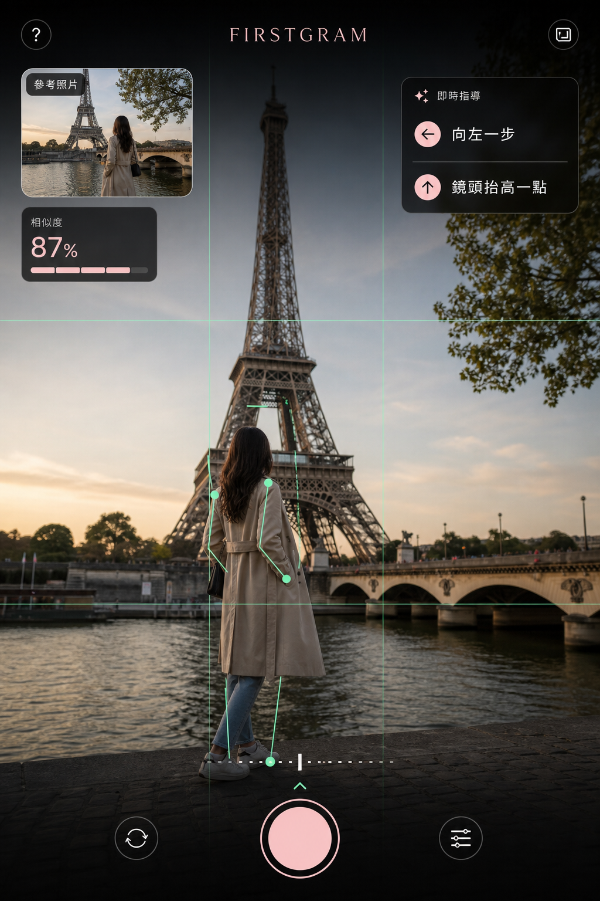

AI 即時引導構圖，第一次就拍到你想要的照片。

先鎖定地平線、主體與透視，建立理想構圖。
AI 指引你往哪裡走、站多遠，主角自然融入畫面。
即時調整機位與比例，細節剛剛好。
Firstgram 先協助你對齊背景：地平線、對稱、比例與視線動線。完成後，再讓人物走進畫面，AI 會持續微調，確保每個元素都在最佳位置。
留下 Email，Firstgram 開放體驗時，我們會優先通知你。
Prototype 階段，資料不會送出或保存。
謝謝你對 Firstgram 感興趣。這是 Prototype，資料未送出或保存。